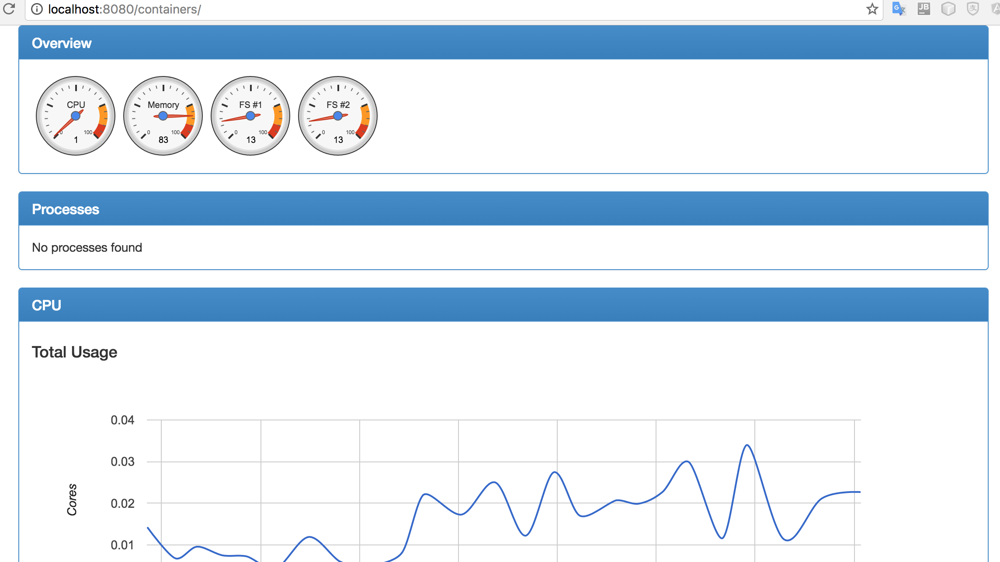

cAdvisor
cAdvisor（Container Advisor）让容器用户可以及时掌握正在运行的容器的资源使用情况和性能态势。它是一个运行的守护进程，能够收集，聚合，处理和导出运行容器相关的信息。具体来说，对于每个容器，cAdvisor能够保存容器的资源隔离参数，历史资源使用，完整历史资源使用的直方图和网络统计，这些数据是从容器和宿主机导出的。
cAdvisor原生支持Docker容器，并且对任何其他类型的容器能够开箱即用。cAdvisor是基于lmctfy的容器抽象，所以容器本身是分层嵌套的。
运行
通过提供的容器镜像直接运行cAdvisor非常简单。在宿主机上运行一个cAdvisor实例就可以监控宿主机和其上的所有容器。运行命令如下：
sudo docker run \
--volume=/:/rootfs:ro \
--volume=/var/run:/var/run:rw \
--volume=/sys:/sys:ro \
--volume=/var/lib/docker/:/var/lib/docker:ro \
--publish=8080:8080 \
--detach=true \
--name=cadvisor \
google/cadvisor:latest上述命令让cAdvisor启动并在后台运行，该启动设置包含了cAdvisor需要监控的Docker状态的目录。可以通过http://<宿主机IP>:8080来访问cAdvisor提供的WEB界面。
在CentOS上运行cAdvisor时，需要添加--privileged=true 和 --volume=/cgroup:/cgroup:ro两项配置。
CentOS/RHEL对其上的容器做了额外的安全限定，cAdvisor需要通过Docker的socket访问Docker守护进程，这需要
--privileged=true参数。某些版本的CentOS/RHEL将cgroup层次结构挂载到了
/cgroup下，cAdvisor需要通过--volume=/cgroup:/cgroup:ro获取容器信息。
如果碰到Invalid Bindmount /错误，可能是由于Docker版本较低所致，可以在启动cAdvisor时不挂载--volume=/:/rootfs:ro。
WEB UI
cAdvisor提供了一个WEB界面可以直观的查看容器的状态信息：

如果需要添加安全验证，可以有两种方案：
HTTP基本认证
需要使用
http_auth_file参数指定一个通过htpassword命令生成的身份认证秘钥的文件。默认情况下，auth域设置为localhost。./cadvisor --http_auth_file test.htpasswd --http_auth_realm localhosttest.htpasswd的内容示例：
admin:$apr1$WVO0Bsre$VrmWGDbcBV1fdAkvgQwdk0- HTTP摘要认证
需要使用
http_digest_file参数指定一个通过htdigest命令生成的身份摘要信息的文件。默认情况下，auth域设置为localhost。./cadvisor --http_digest_file test.htdigest --http_digest_realm localhosttest.htdigest的内容示例：
admin:localhost:70f2631dded4ce5ad0ebbea5faa6ad6e
如果同时设置了这两种认证，只有HTTP基本认证被启用。
配置参数
本地存储持续时间
cAdvisor将最新的历史数据存储在内存中。可以使用
--storage_duration参数配置这些历史记录的存储时间长短。默认值：2min。信息采集
cAdvisor会周期性的采集容器状态信息，下述参数控制cAdvisor如何和何时采集。
- 动态采集
动态管理采集间隔可以让cAdvisor根据容器的活动性调整它收集统计信息的频率。关闭此选项可提供可预测的采集周期间隔，但会增加cAdvisor的资源使用。默认值为：
true。--allow_dynamic_housekeeping=true- 采集间隔
cAdvisor有两个采集间隔设定：全局的和每容器的。全局采集间隔是cAdvisor进行的一次单独的采集操作，通常在检测到新的容器时执行一次。当前，cAdvisor通过内核事件发现新的容器，因此这种全局采集间隔主要用于处理有任何事件遗漏的情况。
--global_housekeeping_interval=1m0s --housekeeping_interval=1s- 容器提示
通过一个JSON文件向cAdvisor传递额外的容器配置信息，JSON文件的格式参考定义。当前该配置仅用于原生容器驱动。
--container_hints="/etc/cadvisor/container_hints.json"- HTTP
指定cAdvisor监听的IP和端口，默认监听所有IP地址。
--listen_ip="" --port=8080调试与日志
调试
--log_cadvisor_usage=false: Whether to log the usage of the cAdvisor container --version=false: print cAdvisor version and exit --profiling=false: Enable profiling via web interface host:port/debug/pprof/- 日志
--log_dir="": If non-empty, write log files in this directory --logtostderr=false: log to standard error instead of files --alsologtostderr=false: log to standard error as well as files --stderrthreshold=0: logs at or above this threshold go to stderr --v=0: log level for V logs --vmodule=: comma-separated list of pattern=N settings for file-filtered logging- 存储驱动
通过
-storage_driver可以指定不同的存储驱动，详细信息请参考后续章节。
REST API
镜像定义
FROM alpine:3.4
MAINTAINER dengnan@google.com vmarmol@google.com vishnuk@google.com jimmidyson@gmail.com stclair@google.com
ENV GLIBC_VERSION "2.23-r3"
RUN apk --no-cache add ca-certificates wget device-mapper && \
apk --no-cache add zfs --repository http://dl-3.alpinelinux.org/alpine/edge/main/ && \
wget -q -O /etc/apk/keys/sgerrand.rsa.pub https://raw.githubusercontent.com/sgerrand/alpine-pkg-glibc/master/sgerrand.rsa.pub && \
wget https://github.com/sgerrand/alpine-pkg-glibc/releases/download/${GLIBC_VERSION}/glibc-${GLIBC_VERSION}.apk && \
wget https://github.com/andyshinn/alpine-pkg-glibc/releases/download/${GLIBC_VERSION}/glibc-bin-${GLIBC_VERSION}.apk && \
apk add glibc-${GLIBC_VERSION}.apk glibc-bin-${GLIBC_VERSION}.apk && \
/usr/glibc-compat/sbin/ldconfig /lib /usr/glibc-compat/lib && \
echo 'hosts: files mdns4_minimal [NOTFOUND=return] dns mdns4' >> /etc/nsswitch.conf && \
rm -rf /var/cache/apk/*
# Grab cadvisor from the staging directory.
ADD cadvisor /usr/bin/cadvisor
EXPOSE 8080
ENTRYPOINT ["/usr/bin/cadvisor", "-logtostderr"]通过cAdvisor默认的镜像定义文件可以看出，可以在镜像启动时直接向容器传递自定义的启动参数。如：
docker run -v /Users/chrisrc/Dcos/deployments:/cfg \
--volume=/:/rootfs:ro \
--volume=/var/run:/var/run:rw \
--volume=/sys:/sys:ro \
--volume=/var/lib/docker/:/var/lib/docker:ro \
--publish=8080:8080 \
--name=cadvisor \
google/cadvisor:latest --http_auth_file /cfg/admin.htpasswd --http_auth_realm localhost在Marathon应用程序JSON定义中，可以使用args传递上述自定义参数，具体请参考容器运行管理。
存储驱动
cAdvisor可以通过不同的存储驱动将采集的信息归集到多种存储系统。当前cAdvisor支持的存储驱动包括：
- BigQuery
- ElasticSearch
- InfluxDB
- Kafka
- Prometheus
- Redis
- StatsD
- stdout
Prometheus
cAdvisor的容器统计信息可以直接作为Prometheus指标开箱使用，因此不必额外配置-storage_driver参数。默认情况下，这些指标在 /metrics 接口下提供。可以通过设置-prometheus_endpoint命令行参考来定制此接口。
下述示例配置是prometheus.yml文件的一个片段，cAdvisor在运行时对外服务端口映射为3002。完整示例请参考监控方案。
scrape_configs:
# dcos_cadvisor
- job_name: 'dcos_cdvisor'
scrape_interval: 1m
scrape_timeout: 10s
target_groups:
- targets: ['192.168.1.80:3002','192.168.1.81:3002',...]
labels:
group: 'development'ElasticSearch
cAdvisor支持将容器统计信息传递给ElasticSearch，要启用此功能，需要额外配置下述参数：
设置存储驱动：
-storage_driver=elasticsearch设置ElasticSearch服务器地址：
-storage_driver_es_host="http://elasticsearch:9200"其它可选参数：
# ElasticSearch type name. By default it's "stats".
-storage_driver_es_type="stats"
# ElasticSearch can use a sniffing process to find all nodes of your cluster automatically. False by default.
-storage_driver_es_enable_sniffer=false完整示例请参考监控方案。
InfluxDB
# Set the storage driver as InfluxDB.
-storage_driver=influxdb
# The *ip:port* of the database. Default is 'localhost:8086'
-storage_driver_host=ip:port
# database name. Uses db 'cadvisor' by default
-storage_driver_db
# database username. Default is 'root'
-storage_driver_user
# database password. Default is 'root'
-storage_driver_password
# Use secure connection with database. False by default
-storage_driver_secure在DC/OS中部署cAdvisor
在DC/OS上可以通过Marathon部署cAdvisor服务。由于DC/OS中Agent节点具有动态性，要让cAdvisor能够监控到所有Agent节点上的容器，需要借助Marathon的约束和DCOS服务动态伸缩的特性。
通过["hostname", "UNIQUE"]约束配置，每个Agent节点只部署一个cAdvisor服务实例。通过instances配置，其值设置为当前DC/OS集群中Agent节点的数量，并在节点增减时，相应的对cAdvisor服务做scale操作即可做到维护同步。
cAdvisor服务的Marathon应用程序JSON定义如下：
{
"id": "cadvisor",
"cpus": 0.1,
"mem": 100,
"disk": 0,
"instances": 8, // 当前集群内Agent节点数
"constraints": [["hostname", "UNIQUE"]],
"args": null,
"container": {
"type": "DOCKER",
"volumes": [
{
"containerPath": "/rootfs",
"hostPath": "/",
"mode": "RO"
},
{
"containerPath": "/var/run/",
"hostPath": "/var/run",
"mode": "RW"
},
{
"containerPath": "/sys",
"hostPath": "/sys",
"mode": "RO"
},
{
"containerPath": "/var/lib/docker",
"hostPath": "/var/lib/docker",
"mode": "RO"
}
],
"docker": {
"image": "google/cadvisor:latest",
"network": "BRIDGE",
"portMappings": [
{
"containerPort": 8080,
"hostPort": 3002,
"protocol": "tcp"
}
],
"forcePullImage": true
}
}
}说明：
部署cAdvisor时，如果需要ElasticSearch或InfluxDB作为存储驱动，可以在
args字段中配置需要的参数设置，以InfluxDB为例："args": ["-storage_driver=influxdb", "-storage_driver_db=cadvisor", "-storage_driver_host=localhost:8086"]- 在DC/OS中，可以直接部署Universe中预先打包的cAdvisor版本（该版本支持InfluxDB）。
应用指标采集
cAdvisor除了可采集容器运行指标之外，还可以采集容器内应用的应用指标。关于cAdvisor采集应用指标的详细信息请参考官方文档。